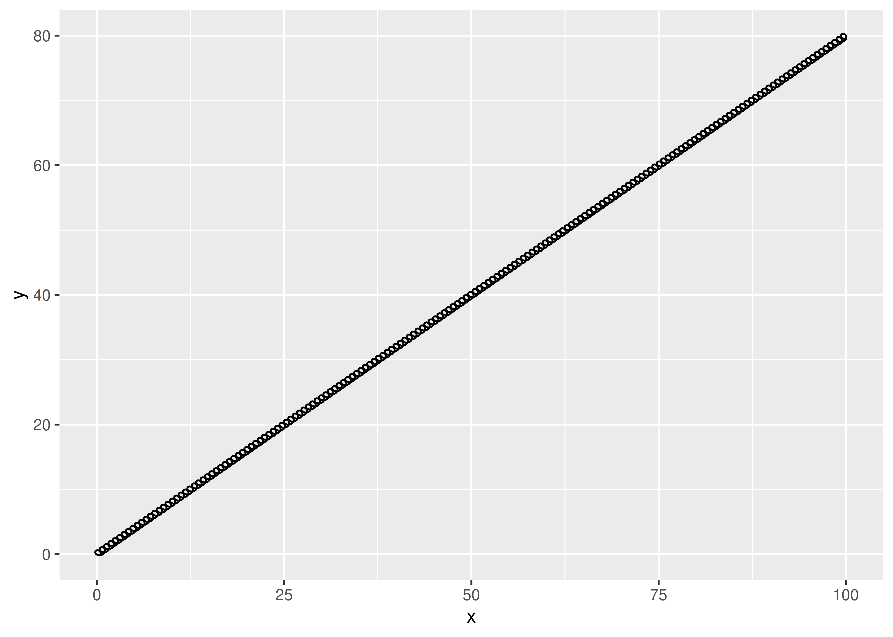
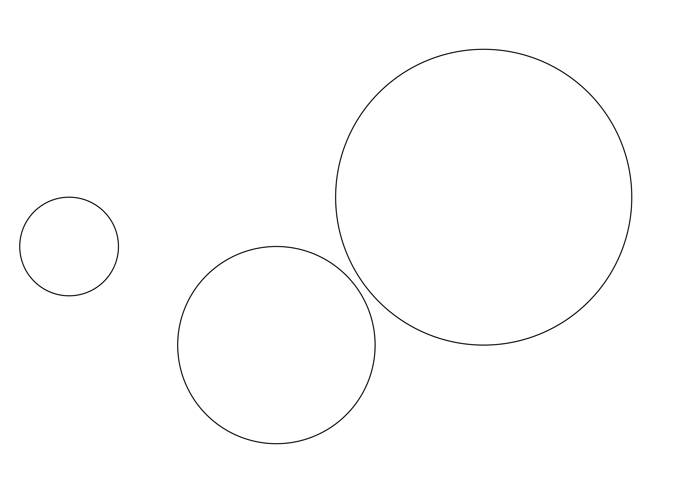
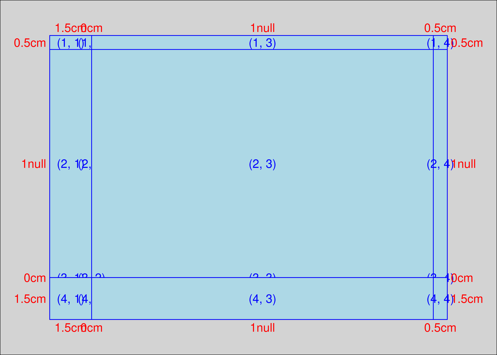

circle <- tibble(
radians = seq(0, 2 * pi, length.out = 100),
x = cos(radians),
y = sin(radians),
index = 1:100,
type = "circle"
)
ggplot(circle, aes(x = x, y = y, alpha = -index)) +
geom_path(show.legend = FALSE) +
coord_equal()4 学习示例
- 本篇文章的内容来自于A case study。
- 暂时不翻译这篇文章
Chapter 4 provided a high-level overview of creating ggplot2 extensions, building on the discussion of ggplot2 internals in Chapter 2. In this chapter we’ll take that knowledge a step further, providing a deeper dive into the process of developing full-featured extensions. To do this, we’ll take a single example — building a new geom that looks like a spring — and follow it all the way through the development process.
This is a carefully crafted example. You’re unlikely to actually want to use springs to visualise your data, so ggplot2 doesn’t already provide a spring geom. However, springs are just complicated enough to illustrate the most important parts of the process. This makes them ideal for our purposes!
We’ll develop the extension in five phases:
- We’ll start as simple as possible by using the existing
geom_path(), pairing it with a new stat (Section 4.2). - The new stat only allows fixed diameter and tension, so we’ll next allow these to be used as aesthetics (Section 4.3).
- A stat is a great place to start but has some fundamental restrictions so we’ll next convert our work to a proper geom (Section 4.4).
- Geoms can only use dimensions relative to the data, and can’t use absolute sizes like 2cm, so next we’ll show you how to draw the spring with grid (Section 4.6).
- We’ll finish up by providing a custom scale and legend to pair with the geom (Section 4.7).
Once you’ve worked your way through this chapter, we highly recommend browsing the ggplot2 source code to look at how other stats and geoms are implemented. They will often be more complicated than what you need, but they’ll give you a sense of the things you can do.
4.1 What is a spring?
Developing an extension usually starts with an idea of what you want to draw. In this case, we want to draw a spring between two points, so we need some code that will draw a plausible-looking spring! There are probably many ways to do this, but one simple approach is to draw a circle while moving the “pen” in one direction. Here’s a data set that defines a circle using 100 points:
To transform this circle into a spring that stretches along the x axis using dplyr, we might do something like this:
spring <- circle %>%
mutate(
motion = seq(0, 1, length.out = 100),
x = x + motion,
type = "spring"
)
ggplot(spring, aes(x = x, y = y, alpha = -index)) +
geom_path(show.legend = FALSE) +
coord_equal()In this case our “spring” has only looped around once – and doesn’t look much like an actual spring – but if we were to continue tracing the circle while moving along the x axis we’d end up with a spring with multiple loops. The faster we move the “pen”, the more we will stretch the spring. This gives us some insight into the two parameters that characterise our springs:
- The
diameterof the spring, defined by the size of the circle. - The
tensionof the spring, defined by how fast we move alongx.
Although this is probably not a physically correct parameterisation of springs in the real world, it’s good enough for our purposes.
Now that we have a method for drawing springs, it’s worth spending a little time thinking about what a geom based on this method will require. The code we’ve written up to this point is perfectly fine for a single plot, but there are new questions to consider when creating an extension:
- How will we specify the diameter of a spring?
- How do we keep the circles circular even as we change the aspect ratio of the plot?
- Can we map diameter and tension to variables in the data?
- Should diameter and tension be parameters that must be the same for all springs in a layer or should they be scaled aesthetics that can vary from spring to spring?
- If we plan to distribute our spring geom to other R users, do we want to depend on the dplyr package?
We’ll consider these questions as we work through the chapter.
4.2 Part 1: A stat
Let’s start turning this idea into a ggplot2 extension. Because we’re creating an extension that draws a new ggplot2 layer, we need to decide whether the ggproto object we create should be a Stat or a Geom. Perhaps surprisingly, this decision isn’t guided by whether we want to end up with geom_spring() or stat_spring(): there are a lot of Stat extensions that are used via a geom_*() constructor. A better way to think about this decision is to consider if we can use an existing geom with transformed data. In that case we can use a Stat which is usually simpler to code than a Geom.
The code we wrote in the last section fits this description nicely. All we’re doing is drawing a path, but we’re circling around instead of going in a straight line. That suggests we can use a Stat that transforms the data and then uses GeomPath to take care of the actual drawing.
4.2.1 Building functionality
Whenever you are developing a new Stat a sensible strategy is to begin by writing the data transformation function, and then once it’s working incorporating it into a ggproto Stat. In this case, we’re going to need a create_spring() function that takes a start point, an end point, a diameter, and a tension. More precisely:
- Our start point will be defined by arguments
xandy. - Our end point will be defined by arguments
xendandyend. - The
diameterargument will be used to scale the size of our circle. - Defining
tensionis slightly trickier. The quantity we actually want to express is “how far the spring moves relative to the size of the circles”. So we’ll definetensionto refer to the total distance moved from the start point to the end point, divided by the size of the circles.1 - We’ll also have a parameter
nto give the number of points used per revolution, defining the visual fidelity of the spring.
We can now write code for our create_spring() function:
create_spring <- function(x,
y,
xend,
yend,
diameter = 1,
tension = 0.75,
n = 50) {
# Validate the input arguments
if (tension <= 0) {
rlang::abort("`tension` must be larger than zero.")
}
if (diameter == 0) {
rlang::abort("`diameter` can not be zero.")
}
if (n == 0) {
rlang::abort("`n` must be greater than zero.")
}
# Calculate the direct length of the spring path
length <- sqrt((x - xend)^2 + (y - yend)^2)
# Calculate the number of revolutions and points we need
n_revolutions <- length / (diameter * tension)
n_points <- n * n_revolutions
# Calculate the sequence of radians and the x and y offset values
radians <- seq(0, n_revolutions * 2 * pi, length.out = n_points)
x <- seq(x, xend, length.out = n_points)
y <- seq(y, yend, length.out = n_points)
# Create and return the transformed data frame
data.frame(
x = cos(radians) * diameter/2 + x,
y = sin(radians) * diameter/2 + y
)
}This function preserves the logic of the spring code we wrote in Section 4.1, but it does a few new things that matter a lot when writing extensions:
- It is precise in specifying the parameters that define the spring.
- It explicitly checks the input, and uses
rlang::abort()to throw an error if the user passes an invalid value to the function. - It uses base R functions to do the work: there is no dplyr code in this function because we don’t want our
Statto depend on dplyr.2
One nice thing about writing create_spring() as a function is that we can test it out3 to convince ourselves that the logic works:
spring <- create_spring(
x = 4, y = 2, xend = 10, yend = 6,
diameter = 2, tension = 0.6, n = 50
)
ggplot(spring) +
geom_path(aes(x = x, y = y)) +
coord_equal()4.2.2 Creating the stat
Now that we have our transformation function, our next task is to encapsulate it into a Stat. To do this, we’ll take what we learned about creating Stat objects in Section 4.2 and extend it a little. Our first step is to write some code that creates a subclass of Stat that we’ll call StatSpring:
StatSpring <- ggproto("StatSpring", Stat)This creates a new Stat subclass named StatSpring. This class doesn’t do anything interesting at this point: the only thing this code does so far is give the class a name.4 To make this useful, we’ll need to specify the methods that will build in the functionality we desire. In Section 4.2 we created a Stat by overriding the default method compute_group() and the default field for required_aes,5 but Stat objects have many properties you can modify . If we print the Stat object, we can see a list of those properties :
Stat
#> <ggproto object: Class Stat, gg>
#> aesthetics: function
#> compute_group: function
#> compute_layer: function
#> compute_panel: function
#> default_aes: uneval
#> dropped_aes:
#> extra_params: na.rm
#> finish_layer: function
#> non_missing_aes:
#> optional_aes:
#> parameters: function
#> required_aes:
#> retransform: TRUE
#> setup_data: function
#> setup_params: functionYou can modify almost any of these: the only ones that you shouldn’t touch are aesthetics and parameters, which are intended for internal use only.
For our StatSpring example, the three methods/fields that we’ll need to specify are setup_data(), compute_panel(), and required_aes. We’ll go through this in more detail in the next section, but to help you see what we’re aiming for, here’s the complete code for our stat:
StatSpring <- ggproto("StatSpring", Stat,
# Edit the input data to ensure the group identifiers are unique
setup_data = function(data, params) {
if (anyDuplicated(data$group)) {
data$group <- paste(data$group, seq_len(nrow(data)), sep = "-")
}
data
},
# Construct data for this panel by calling create_spring()
compute_panel = function(data,
scales,
diameter = 1,
tension = 0.75,
n = 50) {
cols_to_keep <- setdiff(names(data), c("x", "y", "xend", "yend"))
springs <- lapply(
seq_len(nrow(data)),
function(i) {
spring_path <- create_spring(
data$x[i],
data$y[i],
data$xend[i],
data$yend[i],
diameter = diameter,
tension = tension,
n = n
)
cbind(spring_path, unclass(data[i, cols_to_keep]))
}
)
do.call(rbind, springs)
},
# Specify which aesthetics are required input
required_aes = c("x", "y", "xend", "yend")
)We can print any of these methods with a command such as StatSpring$compute_panel or StatSpring$setup_data.
4.2.3 Methods
Let’s take a closer look at the methods defined for our StatSpring. As discussed in Section 4.2 the most important methods for a stat are the three compute_* methods. One of these must always be defined, usually compute_group() or compute_panel(). As a rule of thumb, if the stat operates on multiple rows we start by implementing a compute_group() method, and if the stat operates on single rows we implement a compute_panel() method. Our spring stat is the latter kind: each spring is defined by a single row of the original data, so we’ll use the compute_panel() method which receives all the data for a single panel.
As you can see by looking at source code for our compute_panel() method, we’re doing a bit more than simply calling our create_spring() function:
function(data, scales, diameter = 1, tension = 0.75, n = 50) {
cols_to_keep <- setdiff(names(data), c("x", "y", "xend", "yend"))
springs <- lapply(
seq_len(nrow(data)),
function(i) {
spring_path <- create_spring(
data$x[i],
data$y[i],
data$xend[i],
data$yend[i],
diameter = diameter,
tension = tension,
n = n
)
cbind(spring_path, unclass(data[i, cols_to_keep]))
}
)
do.call(rbind, springs)
}We use lapply() to loop over each row of the data and create the points required to draw the corresponding spring. For each such spring, we use cbind() to combine the spring data with all the non-position columns of the input row. This is very important, since otherwise the aesthetic mappings to e.g. color and size would be lost. Finally, because the output of lapply() is a list of data frames (one per spring), we use rbind() to combine these into a single data frame that gets returned.
When defining a new stat, it is very common to specify one or both of the setup_data() and setup_params() methods. These methods are called at the very beginning of the plot building process, so you can use them to do early checks and modifications of the parameters and data.
For our StatSpring example, we use the setup_data() method to ensure that each input row has a unique group aesthetic. This is important because we’re going to draw our springs with GeomPath, and we need to make sure that the data frame output by the stat has a unique identifier for each spring. Doing so ensures that the geom draws each spring as a distinct path, and won’t draw any connecting lines between different springs. Again, there are some subtle details to call attention to in the implementation:
function(data, params) {
if (anyDuplicated(data$group)) {
data$group <- paste(data$group, seq_len(nrow(data)), sep = "-")
}
data
}Notice that this implementation preserves the original value of data$group, appending a unique id if needed. This is important because the group aesthetic is sometimes used to carry metadata, and we don’t want to lose that information.
The final part of our new class is the required_aes field. This is a character vector that gives the names of aesthetics that the user must provide to the stat. In this case, we need to make sure the user specifies four position aesthetics: x and y define where the spring starts, while xend and yend define where it ends. The required_aes field, along with default_aes and non_missing_aes, also defines the aesthetics that this stat understands. Any aesthetics that don’t appear in these fields (or in the fields of the corresponding geom) will generate a warning and the mapping will be ignored.
4.2.4 Constructors
Now that we have our StatSpring ggproto object, it’s time to write constructor functions that the user will interact with. Strictly speaking we don’t need to do this, because geom_path(stat = "spring") will already work, but it’s good practice to write constructor functions for the convenience of your users. In addition, the constructor function provides a good place to document the new functionality.
Perhaps surprisingly, stat objects are almost always paired with a geom_*() constructor because most ggplot2 users are accustomed to adding geoms, not stats, when building up a plot. The constructor itself is mostly boilerplate code that wraps a call to layer(); just take care to match the argument order and naming used in the ggplot2’s constructors so you don’t surprise your users.
geom_spring <- function(mapping = NULL,
data = NULL,
stat = "spring",
position = "identity",
...,
diameter = 1,
tension = 0.75,
n = 50,
arrow = NULL,
lineend = "butt",
linejoin = "round",
na.rm = FALSE,
show.legend = NA,
inherit.aes = TRUE
) {
layer(
data = data,
mapping = mapping,
stat = stat,
geom = GeomPath,
position = position,
show.legend = show.legend,
inherit.aes = inherit.aes,
params = list(
diameter = diameter,
tension = tension,
n = n,
arrow = arrow,
lineend = lineend,
linejoin = linejoin,
na.rm = na.rm,
...
)
)
}For the sake of completeness you should also create a stat_*() constructor function. There are no surprises here: stat_spring() is very similar to geom_spring() except that it provides a default geom instead of a default stat.
stat_spring <- function(mapping = NULL,
data = NULL,
geom = "path",
position = "identity",
...,
diameter = 1,
tension = 0.75,
n = 50,
na.rm = FALSE,
show.legend = NA,
inherit.aes = TRUE) {
layer(
data = data,
mapping = mapping,
stat = StatSpring,
geom = geom,
position = position,
show.legend = show.legend,
inherit.aes = inherit.aes,
params = list(
diameter = diameter,
tension = tension,
n = n,
na.rm = na.rm,
...
)
)
}4.2.5 Testing the stat
Now that everything is in place, we can test out our new layer:
df <- tibble(
x = runif(5, max = 10),
y = runif(5, max = 10),
xend = runif(5, max = 10),
yend = runif(5, max = 10),
class = sample(letters[1:2], 5, replace = TRUE)
)
ggplot(df) +
geom_spring(aes(x = x, y = y, xend = xend, yend = yend)) +
coord_equal()This looks pretty good. Users can call our geom_spring() constructor function and get sensible results. Better yet, because we’ve written a new stat, we get a number of features for free, like scaling and faceting:
ggplot(df) +
geom_spring(
aes(x, y, xend = xend, yend = yend, colour = class),
linewidth = 1
) +
coord_equal() +
facet_wrap(~ class)Users also have the option of calling the stat_spring() constructor, which can be helpful if for some reason they want to draw the springs with points rather than paths:
ggplot(df) +
stat_spring(
aes(x, y, xend = xend, yend = yend, colour = class),
geom = "point",
n = 15
) +
coord_equal() +
facet_wrap(~ class)4.2.6 Post-mortem
We have now successfully created our first extension. It works, but it has some limitations that we now need to think about.
One shortcoming of our implementation is that diameter and tension are constants that can only be set for the full layer. These settings feel more like aesthetics and it would be nice if their values could be mapped to a variable in the data. We’ll discuss solutions to this problem in Section 4.3 and Section 4.4.
4.3 Part 2: Adding aesthetics
The stat we created in the last section treats the diameter and tension as constant arguments: they’re not aesthetics and the user can’t map them onto a variable in the data. We can fix this by making a few small changes to the StatSpring code:
StatSpring <- ggproto("StatSpring", Stat,
setup_data = function(data, params) {
if (anyDuplicated(data$group)) {
data$group <- paste(data$group, seq_len(nrow(data)), sep = "-")
}
data
},
compute_panel = function(data, scales, n = 50) {
cols_to_keep <- setdiff(names(data), c("x", "y", "xend", "yend"))
springs <- lapply(seq_len(nrow(data)), function(i) {
spring_path <- create_spring(
data$x[i],
data$y[i],
data$xend[i],
data$yend[i],
data$diameter[i],
data$tension[i],
n
)
cbind(spring_path, unclass(data[i, cols_to_keep]))
})
do.call(rbind, springs)
},
required_aes = c("x", "y", "xend", "yend"),
optional_aes = c("diameter", "tension")
)The main difference with our previous attempt is that the diameter and tension arguments to compute_panel() have gone away, and they’re now taken from the data (just like x, y, etc). This has a downside that we’ll fix in Section 4.4: we can no longer set fixed aesthetics. Because of this, we’ll need to remove those arguments from the constructor function:
geom_spring <- function(mapping = NULL,
data = NULL,
stat = "spring",
position = "identity",
...,
n = 50,
arrow = NULL,
lineend = "butt",
linejoin = "round",
na.rm = FALSE,
show.legend = NA,
inherit.aes = TRUE) {
layer(
data = data,
mapping = mapping,
stat = stat,
geom = GeomPath,
position = position,
show.legend = show.legend,
inherit.aes = inherit.aes,
params = list(
n = n,
arrow = arrow,
lineend = lineend,
linejoin = linejoin,
na.rm = na.rm,
...
)
)
}The stat_spring() constructor would require the same kind of change.
All that is left is to test our new implementation out:
df <- tibble(
x = runif(5, max = 10),
y = runif(5, max = 10),
xend = runif(5, max = 10),
yend = runif(5, max = 10),
class = sample(letters[1:2], 5, replace = TRUE),
tension = runif(5),
diameter = runif(5, 0.5, 1.5)
)
ggplot(df, aes(x, y, xend = xend, yend = yend)) +
geom_spring(aes(tension = tension, diameter = diameter))It appears to work. However, as we expected, it’s no longer possible to set diameter and tension as parameters:
ggplot(df, aes(x, y, xend = xend, yend = yend)) +
geom_spring(diameter = 0.5)
#> Warning in geom_spring(diameter = 0.5): Ignoring unknown parameters: `diameter`
#> Warning: Computation failed in `stat_spring()`
#> Caused by error in `if (tension <= 0) ...`:
#> ! argument is of length zero4.3.1 Post-mortem
In this section we further developed our spring stat so that diameter and tension can be used as aesthetics, varying across springs. Unfortunately, there’s a major downside: these features no longer can be set globally. We’re still also missing a way to control the scaling of the two aesthetics. Fixing both these problems requires the same next step: move our implementation away from Stat and towards a proper Geom.
4.4 Part 3: A geom
In many cases a Stat-centred approach is sufficient, for example, many of the graphic primitives provided by the ggforce package are Stats. But we need to go further with the spring geom because the tension and diameter aesthetics need to be specified in units that are unrelated to the coordinate system. Consequently, we’ll rewrite our geom to be a proper Geom extension.
4.4.1 Geom extensions
As discussed in Chapter 4, there are many similarities between Stat and Geom extensions. The biggest difference is that Stat extensions return a modified version of the input data, whereas Geom extensions return graphical objects. In some cases creating a new geom requires you to use the grid package (we’ll cover this in Section 4.6), but often you don’t have to.
Much like stat objects, geom objects in ggproto have several methods and fields you can modify. You can see the list by printing the object:
Geom
#> <ggproto object: Class Geom, gg>
#> aesthetics: function
#> default_aes: uneval
#> draw_group: function
#> draw_key: function
#> draw_layer: function
#> draw_panel: function
#> extra_params: na.rm
#> handle_na: function
#> non_missing_aes:
#> optional_aes:
#> parameters: function
#> rename_size: FALSE
#> required_aes:
#> setup_data: function
#> setup_params: function
#> use_defaults: function4.4.2 Creating the geom
In much the same way that a stat uses the compute_layer(), compute_panel(), and compute_group() methods to transform the data, a geom uses draw_layer(), draw_panel(), and draw_group() to create graphical representations of the data. In the same way that we created StatSpring by writing a compute_panel() method to do the heavy lifting, we’ll create GeomSpring by writing a draw_panel() method:
GeomSpring <- ggproto("GeomSpring", Geom,
# Ensure that each row has a unique group id
setup_data = function(data, params) {
if (is.null(data$group)) {
data$group <- seq_len(nrow(data))
}
if (anyDuplicated(data$group)) {
data$group <- paste(data$group, seq_len(nrow(data)), sep = "-")
}
data
},
# Transform the data inside the draw_panel() method
draw_panel = function(data,
panel_params,
coord,
n = 50,
arrow = NULL,
lineend = "butt",
linejoin = "round",
linemitre = 10,
na.rm = FALSE) {
# Transform the input data to specify the spring paths
cols_to_keep <- setdiff(names(data), c("x", "y", "xend", "yend"))
springs <- lapply(seq_len(nrow(data)), function(i) {
spring_path <- create_spring(
data$x[i],
data$y[i],
data$xend[i],
data$yend[i],
data$diameter[i],
data$tension[i],
n
)
cbind(spring_path, unclass(data[i, cols_to_keep]))
})
springs <- do.call(rbind, springs)
# Use the draw_panel() method from GeomPath to do the drawing
GeomPath$draw_panel(
data = springs,
panel_params = panel_params,
coord = coord,
arrow = arrow,
lineend = lineend,
linejoin = linejoin,
linemitre = linemitre,
na.rm = na.rm
)
},
# Specify the default and required aesthetics
required_aes = c("x", "y", "xend", "yend"),
default_aes = aes(
colour = "black",
linewidth = 0.5,
linetype = 1L,
alpha = NA,
diameter = 1,
tension = 0.75
)
)Despite the length of this code, most of it is familiar:
The
setup_data()methods are essentially the same: in both cases they ensure that every row in the input data has a unique group identifier.The
draw_panel()method for ourGeomSpringobject is very similar to thecompute_panel()method. The main difference is that ourdraw_panel()method has an extra step: it passes the computed spring coordinates toGeomPath$draw_panel(). Because springs are just fancy paths, theGeomPath$draw_panel()method works perfectly well here.Unlike the
StatSpringcode that we wrote earlier, theGeomSpringcode uses thedefault_aesfield to provide default values for any aesthetic that the user does not specify.
One aspect to this code may surprise developers who are used to object-oriented design from other languages. Calling the method of a kindred object directly, as we do when invoking GeomPath$draw_panel() from within GeomSpring$draw_panel(), is not considered good practice in other object-oriented systems. However, because ggproto objects are stateless (Section 2.4.5), this is exactly as safe as subclassing GeomPath and calling the parent method. You can see this approach all over the place in the ggplot2 source code.
4.4.3 A constructor
As with our earlier attempts the final step is to write a constructor function geom_spring(). The code is not much different to earlier versions: we use GeomSpring instead of GeomPath, and we use the identity stat instead of StatSpring.
geom_spring <- function(mapping = NULL,
data = NULL,
stat = "identity",
position = "identity",
...,
n = 50,
arrow = NULL,
lineend = "butt",
linejoin = "round",
na.rm = FALSE,
show.legend = NA,
inherit.aes = TRUE) {
layer(
data = data,
mapping = mapping,
stat = stat,
geom = GeomSpring,
position = position,
show.legend = show.legend,
inherit.aes = inherit.aes,
params = list(
n = n,
arrow = arrow,
lineend = lineend,
linejoin = linejoin,
na.rm = na.rm,
...
)
)
}4.4.4 Testing the geom
We now have a proper geom with working default aesthetics and the ability to setting aesthetics as parameters:
ggplot(df, aes(x, y, xend = xend, yend = yend)) +
geom_spring(aes(tension = tension, diameter = diameter))
ggplot(df, aes(x, y, xend = xend, yend = yend)) +
geom_spring(diameter = 0.5)
It does have some limitations still, because the units for diameter and tension are expressed relative to the scale of the raw data. The actual diameter of a spring with diameter = 0.5 will be different depending on the axis limits, and if the x and y axes are not on the same scale the shape of the spring will be distorted. You can see this in the example below:
ggplot() +
geom_spring(aes(x = 0, y = 0, xend = 3, yend = 20))The same underlying problem means that the diameter of the spring is expressed in coordinate space. This makes it difficult to define a meaningful default because the absolute size of the spring diameter changes when the scale of the data changes:
ggplot() +
geom_spring(aes(x = 0, y = 0, xend = 100, yend = 80))
We’ll address this issue in Section 4.6.
4.4.5 Post-mortem
In this section we finally created our own Geom extension. This is often the natural conclusion to the development of new layer, but not always. Sometimes you’ll find that the Stat approach works perfectly well for your purposes, and it has the advantage that you can use the stat with multiple geoms. The final choice is up to you as the developer, and should be guided by how you expect people to use the layer.
Perhaps surprisingly, we haven’t talked about what goes on inside the draw_*() methods yet. Our GeomSpring object relies on the draw_panel() method from GeomPath to do the work of creating the graphical output. This is quite common. For example, even the relatively complex GeomBoxplot just uses the draw methods from GeomPoint(), GeomSegment and GeomCrossbar.
If you need to go deeper, you’ll need to learn a little about grid. Creating grid grobs is an advanced technique, needed by relatively few geoms. But creating a grid grob gives you the power to use absolute units for diameter (e.g. 1cm) and to adjust the display of the geom based on the size of the output device. We’ll turn to that next.
4.5 An introduction to grid
The grid package provides the underlying graphics system upon which ggplot2 is built. It’s one of two quite different drawing systems that are included in base R: base graphics and grid. Base graphics has an imperative “pen-on-paper” model: every function immediately draws something on the graphics device. Much like ggplot2 itself, grid takes a more declarative approach where you build up a description of the graphic as an object, which is later rendered. This declarative approach allows us to create objects that exists independently of the graphic device and can be passed around, analysed, and modified. Importantly, parts of a graphical object can refer to other parts, which allows you to do things like define this rectangle to have width equal to the length of that string of text, and so on.
As a ggplot2 developer you will find that you can achieve a lot without ever needing to interact with grid directly, but there are situations where it is impossible to achieve what you want without going down to the grid level. The two most common situations are:
You need to create graphical objects that are positioned correctly on the coordinate system, but where some part of their appearance has a fixed absolute size. In our case this would be the spring correctly going between two points in the plot, but the diameter being defined in cm instead of relative to the coordinate system.
You need graphical objects that are updated during resizing. This could e.g. be the position of labels such as in the ggrepel package or the
geom_mark_*()geoms in ggforce.
A comprehensive introduction to grid is far more than we can cover in this book, but to help you get started we’ll give you the absolute minimum vocabulary to understand how ggplot2 uses grid. We’ll introduce core concepts like grobs, viewports, graphical parameters, and units but please read R Graphics by @murrell:2018 to get the full details.
4.5.1 Grobs
To understand how grid works, the first thing we need to talk about are grobs. Grobs (graphic objects) are the atomic representations of graphical elements in grid, and include types like points, lines, circles, rectangles, and text. The grid package provides functions like pointsGrob(), linesGrob(), circleGrob(), rectGrob(), and textGrob() that create graphical objects without drawing anything to the graphics device. These functions are vectorised, allowing a single point grob to represent multiple points, for instance:
library(grid)
circles <- circleGrob(
x = c(0.1, 0.4, 0.7),
y = c(0.5, 0.3, 0.6),
r = c(0.1, 0.2, 0.3)
)
circles
#> circle[GRID.circle.606]Note that this code doesn’t draw anything: it’s just a description of a set of circles. To draw it, we first call grid.newpage() to clear the current graphics device then grid.draw():
grid.newpage()
grid.draw(circles)
grid also provides grobTree(), which construct composite objects from multiple atomic grobs. Here’s an illustration:
labels <- textGrob(
label = c("small", "medium", "large"),
x = c(0.1, 0.4, 0.7),
y = c(0.5, 0.3, 0.6),
)
composite <- grobTree(circles, labels)
grid.newpage()
grid.draw(composite)It is also possible to define your own grobs. You can define a new primitive grob class using grob() or a new composite class using gTree(), then specify special behaviour for your new class. We’ll see an example of this in a moment.
4.5.2 Viewports
The second key concept in grid is the idea of a viewport. A viewport is a rectangular plotting region that supplies its own coordinate system for grobs that are drawn within it, and can also provide a tabular grid in which other viewports an be nested. An individual grob can have its own viewport or, if none is provided, it will inherit one. While we won’t need to consider viewports when building the grob for our springs, they’re an important concept that powers much of the high-level layout of ggplot2 graphics so we’ll very briefly introduce them here. In the example below we use viewport() to define two different viewports, one with default parameters, and second one that is rotated around the midpoint by 15 degrees:
This time around, when we create our composite grobs, we’ll explicitly assign them to specific viewports by setting the vp argument:
When we plot these two grobs, we can see the effect of the viewport: although composite_default and composite_rotated are comprised of the same two primitive grobs (i.e., circles and labels), they belong to different viewports so they look different when the plot is drawn:
grid.newpage()
grid.draw(composite_default)
grid.draw(composite_rotated)ggplot2 automatically generates most of the viewports that you’ll need for plotting, but it’s important to understand the basic idea.
4.5.3 Graphical parameters
The next concept we need to understand is the idea of graphical parameters. When we defined the circles and labels grobs, we only specified some of their properties. For example, we said nothing about colour or transparency, so these properties are all set to their default values. The gpar() function in grid allows you to specify graphical parameters as distinct objects:
The gp_blue and gp_orange objects provide lists of graphical settings that can now be applied to any grob we like using the gp argument:
When we plot these two grobs, they inherit the settings provided by the graphical parameters as well as the viewports to which they are assigned:
grid.newpage()
grid.draw(grob1)
grid.draw(grob2)4.5.4 Units
The last core concept that we need to discuss is the unit system. The grid package allows you to specify the positions (e.g. x and y) and dimensions (e.g. length and width) of grobs and viewports using a flexible specification. In the grid unit system there are three qualitatively different styles of unit:
- Absolute units, e.g. centimeters, inches, and points, refer to physical sizes.
- Relative units e.g.
npcwhich represents a proportion of the current viewport size. - Units defined by strings or other grobs, e.g.
strwidth,grobwidth.
The unit() function is the main function we use when specifying units: unit(1, "cm") is 1 centimeter, whereas unit(0.5, "npc") is half the size of the relevant viewport. The unit system supports arithmetic operations that are only resolved at draw time, which makes it possible to combine different types of units: unit(0.5, "npc") + unit(1, "cm") defines a point one centimeter to the right of the center of the current viewport.
4.5.5 Building grob classes
Now that we have a basic understanding of grid, let’s attempt to create our own “surprise” grob class: objects that are circles if they are smaller than 3cm, but transform into squares whenever they are larger than 3cm. This is not the most useful kind of graphical object, but it’s useful for illustrating the flexibility of the grid system. The first step is to write our own constructor function using grob() or gTree(), depending on whether we are creating a primitive or composite object. We begin by creating a “thin” constructor function:
surpriseGrob <- function(x,
y,
size,
default.units = "npc",
name = NULL,
gp = gpar(),
vp = NULL) {
# Ensure that input arguments are units
if (!is.unit(x)) x <- unit(x, default.units)
if (!is.unit(y)) y <- unit(y, default.units)
if (!is.unit(size)) size <- unit(size, default.units)
# Construct the surprise grob subclass as a gTree
gTree(
x = x,
y = y,
size = size,
name = name,
gp = gp,
vp = vp,
cl = "surprise"
)
}This function doesn’t do very much. All it does is ensure that the x, y, and size arguments are grid units, and sets the class name to be “surprise”. To define the behaviour of our grob, we need to specify methods for one or both of the generic functions makeContext() and makeContent():
makeContext()is called when the parent grob is rendered and allows you to control the viewport of the grob. We won’t need to use that for our surprise grob.makeContent()is called every time the drawing region is resized and allows you to customise the look of the grob based on the size or other aspect.
Because these generic functions use the S3 object oriented programming system, we can define our method simply by appending the class name to the end of the function name. That is, the makeContent() method for our surprise grob is defined by creating a function called makeContent.surprise() that takes a grob as input and returns a modified grob as output:
makeContent.surprise <- function(x) {
x_pos <- x$x
y_pos <- x$y
size <- convertWidth(x$size, unitTo = "cm", valueOnly = TRUE)
# Figure out if the given sizes are bigger or smaller than 3 cm
circles <- size < 3
# Create a circle grob for the small ones
if (any(circles)) {
circle_grob <- circleGrob(
x = x_pos[circles],
y = y_pos[circles],
r = unit(size[circles] / 2, "cm")
)
} else {
circle_grob <- NULL
}
# Create a rect grob for the large ones
if (any(!circles)) {
square_grob <- rectGrob(
x = x_pos[!circles],
y = y_pos[!circles],
width = unit(size[!circles], "cm"),
height = unit(size[!circles], "cm")
)
} else {
square_grob <- NULL
}
# Add the circle and rect grob as children of our input grob
setChildren(x, gList(circle_grob, square_grob))
}Some of the functions we’ve called here are new, but they all reuse the core concepts that we discussed earlier. Specifically:
-
convertWidth()is used to convert grid units from one type to another. -
gList()creates a list of grobs. -
setChildren()specifies the grobs that belong to a gTree composite grob.
The effect of this function is to ensure that every time the grob is rendered the absolute size of each shape is recalculated. All shapes smaller than 3cm become circles, and all shapes larger than 3cm become squares. To see how this plays out, lets call our new function:
The surprises grob contains three shapes whose locations and sizes have been specified relative to the size of the viewport. At this point in time we have no idea which of these shapes will be circles and which will be squares: that depends on the size of the viewport in which the surprises grob is to be drawn. We can now draw the grob in the usual way:
grid.newpage()
grid.draw(surprises)If you run this code interactively and resize the plotting window you’ll see that the three objects change shape based on the size of the plotting window. This is not the most useful way to employ grid, of course, but hopefully you can see how this technique can be used to do real work.
4.5.6 Tabular grid
The last aspect to grid we’ll discuss here is the layout engine provided by the gtable package. It’s not necessary to know about gtable in order to build our spring grob, but there are other kinds of ggplot2 extensions that do require this knowledge, so we’ll give a brief overview here.
As discussed in Section 2.3, when ggplot2 passes the plot to grid for rendering it does so by creating a gtable object with ggplot_gtable(). We can extract this object using the ggplotGrob() function:
p <- ggplot(mpg, aes(displ, hwy)) + geom_point()
grob_table <- ggplotGrob(p)
grob_table
#> TableGrob (12 x 9) "layout": 18 grobs
#> z cells name grob
#> 1 0 ( 1-12, 1- 9) background rect[plot.background..rect.654]
#> 2 5 ( 6- 6, 4- 4) spacer zeroGrob[NULL]
#> 3 7 ( 7- 7, 4- 4) axis-l absoluteGrob[GRID.absoluteGrob.642]
#> 4 3 ( 8- 8, 4- 4) spacer zeroGrob[NULL]
#> 5 6 ( 6- 6, 5- 5) axis-t zeroGrob[NULL]
#> 6 1 ( 7- 7, 5- 5) panel gTree[panel-1.gTree.634]
#> 7 9 ( 8- 8, 5- 5) axis-b absoluteGrob[GRID.absoluteGrob.638]
#> 8 4 ( 6- 6, 6- 6) spacer zeroGrob[NULL]
#> 9 8 ( 7- 7, 6- 6) axis-r zeroGrob[NULL]
#> 10 2 ( 8- 8, 6- 6) spacer zeroGrob[NULL]
#> 11 10 ( 5- 5, 5- 5) xlab-t zeroGrob[NULL]
#> 12 11 ( 9- 9, 5- 5) xlab-b titleGrob[axis.title.x.bottom..titleGrob.645]
#> 13 12 ( 7- 7, 3- 3) ylab-l titleGrob[axis.title.y.left..titleGrob.648]
#> 14 13 ( 7- 7, 7- 7) ylab-r zeroGrob[NULL]
#> 15 14 ( 4- 4, 5- 5) subtitle zeroGrob[plot.subtitle..zeroGrob.650]
#> 16 15 ( 3- 3, 5- 5) title zeroGrob[plot.title..zeroGrob.649]
#> 17 16 (10-10, 5- 5) caption zeroGrob[plot.caption..zeroGrob.652]
#> 18 17 ( 2- 2, 2- 2) tag zeroGrob[plot.tag..zeroGrob.651]The output illustrates how the ggplot2 layout is structured. The plot is comprised of 18 distinct grobs that are arranged in a TableGrob that specifies a 12 x 9 grid, which in turn supplies a collection of viewports within which individual grobs can be drawn. This TableGrob is itself a grobtree, and can be rendered with grid in by calling grid.draw():
grid.newpage()
grid.draw(grob_table)To illustrate how a TableGrob works, we’ll create a simplified version of this output without using ggplot2. Our first step is to define the constituent grobs that make up our plot:
xtick <- 0:8
ytick <- seq(0, 50, 10)
points <- pointsGrob(
x = mpg$displ / xtick[length(xtick)],
y = mpg$hwy / ytick[length(ytick)],
default.units = 'npc',
size = unit(6, 'pt')
)
xaxis <- xaxisGrob(
at = seq(0, 1, length.out = length(xtick)),
label = xtick
)
yaxis <- yaxisGrob(
at = seq(0, 1, length.out = length(ytick)),
label = ytick
)The points grob contains the data to be plotted, while xaxis and yaxis are grobs that draw labelled axes. When we draw the points grob, we get the core of a scatter plot:
grid.newpage()
grid.draw(points)However, if we want to add axes to this plot, we need a set of viewports laid out in a tabular format so that we can place xaxis immediately below points, and yaxis to the left of points. In ggplot2, this is handled by the gtable layout engine. First, we use gtable() to define the structure:
The plot_layout object is a 4 x 4 TableGrob that defines viewports with sizes that match the row heights and column widths that we passed to gtable(). The gtable_show_layout() function provides a convenient way to visualise this layout:
gtable_show_layout(plot_layout)
Notice that this layout has one row with height zero, and one column with width zero. We’ll place the xaxis and yaxis grobs into these rows, and allow them to “spill over” into the adjacent rows and columns that specify the margins for the plot.
To place the grobs into the table, we use the gtable_add_grob() function. A TableGrob layout allows an individual grob to span multiple cells using the arguments t, l, b, and r to specify cell indices for the topmost, leftmost, bottom, and rightmost cells spanned by the grob. However, the default is to assume that each grob belongs to exactly one cell, in which case only the t and l arguments need to be specified:
plot_layout <- gtable_add_grob(
plot_layout,
grobs = list(points, xaxis, yaxis),
t = c(2, 3, 2), # the row defining the top extent of each grob
l = c(3, 3, 2), # the column defining the left extent of each grob
clip = 'off'
)If we inspect our plot_layout object, we see something that has the same structure as the TableGrob produced by the ggplot2 code above:
plot_layout
#> TableGrob (4 x 4) "layout": 3 grobs
#> z cells name grob
#> 1 1 (2-2,3-3) layout points[GRID.points.655]
#> 2 2 (3-3,3-3) layout xaxis[GRID.xaxis.656]
#> 3 3 (2-2,2-2) layout yaxis[GRID.yaxis.657]We can now draw our plot using grid.draw():
grid.newpage()
grid.draw(plot_layout)Clearly, we’re still missing a lot of important details that would be necessary in a real plot, but hopefully it is now clear how ggplot2 arranges a collection of grobs within a structured plot layout.
4.6 Part 4: A grid grob
Let’s return to the problem at hand. Armed with our new knowledge of the grid system, we can construct a spring grob that specifies the diameter in absolute units.
4.6.1 The springGrob
Let’s start by defining the springGrob() function. Our key insight is that we can write the grob code in a way that pushes the spring drawing action down to the level of the makeContent() function. By doing this, we can ensure that the diameter is computed at draw time using absolute units instead of defining the diameter relative to the plot coordinates.
We’ll start by creating our constructor function. The arguments to this function are based on the segmentsGrob() since we are, in essence, drawing modified segments:
springGrob <- function(x0 = unit(0, "npc"),
y0 = unit(0, "npc"),
x1 = unit(1, "npc"),
y1 = unit(1, "npc"),
diameter = unit(0.1, "npc"),
tension = 0.75,
n = 50,
default.units = "npc",
name = NULL,
gp = gpar(),
vp = NULL) {
# Use the default unit if the user does not specify one
if (!is.unit(x0)) x0 <- unit(x0, default.units)
if (!is.unit(x1)) x1 <- unit(x1, default.units)
if (!is.unit(y0)) y0 <- unit(y0, default.units)
if (!is.unit(y1)) y1 <- unit(y1, default.units)
if (!is.unit(diameter)) diameter <- unit(diameter, default.units)
# Return a gTree of class "spring"
gTree(
x0 = x0,
y0 = y0,
x1 = x1,
y1 = y1,
diameter = diameter,
tension = tension,
n = n,
name = name,
gp = gp,
vp = vp,
cl = "spring"
)
}We see that once again our constructor is a very thin wrapper around gTree(). It doesn’t introduce any new concepts: all it does is ensure that arguments are converted to units if necessary, and then returns a composite grob with class “spring”. The work of drawing our spring occurs in the makeContent() method:
makeContent.spring <- function(x) {
# Convert position and diameter values absolute units
x0 <- convertX(x$x0, "mm", valueOnly = TRUE)
x1 <- convertX(x$x1, "mm", valueOnly = TRUE)
y0 <- convertY(x$y0, "mm", valueOnly = TRUE)
y1 <- convertY(x$y1, "mm", valueOnly = TRUE)
diameter <- convertWidth(x$diameter, "mm", valueOnly = TRUE)
# Leave tension and n untouched
tension <- x$tension
n <- x$n
# Transform the input data to a data frame containing spring paths
springs <- lapply(seq_along(x0), function(i) {
cbind(
create_spring(
x = x0[i],
y = y0[i],
xend = x1[i],
yend = y1[i],
diameter = diameter[i],
tension = tension[i],
n = n
),
id = i
)
})
springs <- do.call(rbind, springs)
# Construct the grob
spring_paths <- polylineGrob(
x = springs$x,
y = springs$y,
id = springs$id,
default.units = "mm",
gp = x$gp
)
setChildren(x, gList(spring_paths))
}Again there are a couple of new grid functions here, but hopefully it’s not too hard to work out what they do. In truth there is nothing fancy happening here. Whenever the plot is resized, we grab the coordinates and the diameter settings from the spring grob, and convert them all to millimeters. Only after converting the important quantities to absolute units do we construct the spring paths using the create_spring() function we wrote at the beginning: by pushing the call to create_spring() to this level, we can ensure that the path is defined using absolute units, and then return the result as a polyline grob.
We now have a spring grob suitable for use in ggplot2. In the next section we’ll build a geom around it, but before we do that let’s check that our code behaves as expected:
springs <- springGrob(
x0 = c(0, 0),
y0 = c(0, 0.5),
x1 = c(1, 1),
y1 = c(1, 0.5),
diameter = unit(c(1, 3), "cm"),
tension = c(0.2, 0.7)
)
grid.newpage()
grid.draw(springs)This looks good, so we can now design our new (and final) geom.
4.6.2 The last GeomSpring
Now that we have a custom grob that draws springs, we can create a GeomSpring ggproto object that uses it. Here’s the complete code for that geom:
GeomSpring <- ggproto("GeomSpring", Geom,
# Check that the user has specified sensible parameters
setup_params = function(data, params) {
if (is.null(params$n)) {
params$n <- 50
} else if (params$n <= 0) {
rlang::abort("Springs must be defined with `n` greater than 0")
}
params
},
# Check input data and return grobs
draw_panel = function(data,
panel_params,
coord,
n = 50,
lineend = "butt",
na.rm = FALSE) {
# Remove missing data, returning early if all are missing
data <- remove_missing(
df = data,
na.rm = na.rm,
vars = c("x", "y", "xend", "yend", "linetype", "linewidth"),
name = "geom_spring"
)
if (is.null(data) || nrow(data) == 0) return(zeroGrob())
# Supply the coordinate system for the plot
if (!coord$is_linear()) {
rlang::warn(
"spring geom only works correctly on linear coordinate systems"
)
}
coord <- coord$transform(data, panel_params)
# Construct the grob
springGrob(
coord$x,
coord$y,
coord$xend,
coord$yend,
default.units = "native",
diameter = unit(coord$diameter, "cm"),
tension = coord$tension,
n = n,
gp = gpar(
col = alpha(coord$colour, coord$alpha),
lwd = coord$linewidth * .pt,
lty = coord$linetype,
lineend = lineend
)
)
},
# Specify the default and required aesthetics
required_aes = c("x", "y", "xend", "yend"),
default_aes = aes(
colour = "black",
linewidth = 0.5,
linetype = 1L,
alpha = NA,
diameter = 0.35,
tension = 0.75
)
)There are a few things to note here. As you might expect, the main changes from the last version are in the draw_panel() method (see below). But there are a couple of other changes.
Previous versions of
GeomSpring– andStatSpringbefore it – included asetup_data()method that modified the group column in the input data. That’s gone now: we no longer need to worry about this because this new version of the geom doesn’t callcreate_spring()directly. As far as the geom is concerned, each spring is defined by one (and only one) row in the input data. All the work of “expanding” this to a spring-like path is handled by the grob.This version of
GeomSpringhas asetup_params()method. Its only job is to check the number of points used to define the spring.The
default_aesfield is slightly different. The important change is that we can now set a meaningful default value fordiameter.
Let’s now take a closer look at the new draw_panel() method. Because we are no longer relying on GeomPath$draw_panel() to do the work, we have a few new tasks to take care of:
It checks to see if the coordinate system is non-linear (e.g.
coord_polar()), and if so it emits a warning because our spring grob is not designed to work in that context.It uses the coordinate system to rescale the positional aesthetics by calling the
transform()method for thecoordobject. This remaps all positional aesthetics to lie between 0 and 1, with 0 being the lowest value visible in our viewport (scale expansions included) and 1 being the highest. With this remapping the coordinates are ready to be passed to the grob.We pass a set of graphical parameters to the grob using the grid
gpar()function. Not all grobs care about all entries ingpar()and since we are constructing a line we only care about the graphical parameters thatpolylineGrob()understands, namely:col(stroke colour),lwd(line width),lty(line type),lineend(the terminator shape of the line).
Now that GeomSpring is defined, all that remains is to create a constructor function that the user can call:
geom_spring <- function(mapping = NULL,
data = NULL,
stat = "identity",
position = "identity",
...,
n = 50,
lineend = "butt",
na.rm = FALSE,
show.legend = NA,
inherit.aes = TRUE) {
layer(
data = data,
mapping = mapping,
stat = stat,
geom = GeomSpring,
position = position,
show.legend = show.legend,
inherit.aes = inherit.aes,
params = list(
n = n,
lineend = lineend,
na.rm = na.rm,
...
)
)
}At long last we can put our new geom_spring() function to good use:
ggplot(df) +
geom_spring(aes(
x = x * 100,
y = y,
xend = xend,
yend = yend,
diameter = diameter,
tension = tension
))As you can see from the output above, we now have springs that behave sensibly when the aspect ratio of the plot changes or when the x and y axes are on different scales. Resizing the plot will trigger a recalculation of the correct path, so it will continue to look as it should.
4.6.3 Post-mortem
We have finally arrived at the spring geom we set out to make. The diameter aesthetic for our spring has similar behaviour to the linewidth aesthetic, in that it remains fixed when resizing and/or changing the aspect ratio of the plot. There are still improvements we could (and perhaps, should) make. Most notably our create_spring() function remains un-vectorised and needs to be called for each spring separately. Correctly vectorising this function will allow for considerable speed-up when rendering many springs (if that was ever a need). We will leave this as an exercise for the reader.
While the geom is now done, we still have a little work to do. We need to create a diameter scale and provide legend keys that can correctly communicate diameter and tension. This will be the topic of the final section.
4.7 Part 5: Scales
The last step in our process is to define new scales. We want to do this because we have defined two new aesthetics (diameter and tension), and we’d like users to be able to scale them. There’s nothing wrong with defining new aesthetics without providing a scale — which means that the mapped values are passed through unchanged — but if we want users to have some control as well as the possibility of a legend we will need to provide scales for the aesthetics. This is the goal of this final section.
4.7.1 Scaling
Thankfully, compared to the work we’ve done so far, creating new scales is not a huge undertaking. We discussed the basic ideas in Section 4.5, and we can apply those concepts here without too much pain. Our main task is to create a function with the appropriate name that outputs a Scale object. Most scale functions are simple wrappers around one of the three fundamental scale constructor functions, continuous_scale(), discrete_scale(), and binned_scale(). Here’s how we do that for the tension aesthetic:
scale_tension_continuous <- function(..., range = c(0.1, 1)) {
continuous_scale(
aesthetics = "tension",
scale_name = "tension_c",
palette = scales::rescale_pal(range),
...
)
}This scale_tension_continuous() function indicates which aesthetics it applies to, provides an explicit scale_name, and provides a palette function that transforms the input domain to the output range. All the other arguments that you’d typically expect to see in a scale function, such as name, breaks, limits, get passed down to continuous_scale() with the dots ....
For the tension aesthetic, we expect that users will apply it to continuous scales only, so it’s convenient to define scale_tension() as an alias for scale_tension_continuous():
scale_tension <- scale_tension_continuousFinally, because we don’t want people trying to map the tension aesthetic to discrete data, we’ll also define a scale_tension_discrete() function that always throws an error:
scale_tension_discrete <- function(...) {
rlang::abort("Tension cannot be used with discrete data")
}The reason this works is that ggplot2 assigns the default scale for aesthetics by searching for a function called scale_<aesthetic-name>_<data-type>, so any time the user maps the tension aesthetic to a discrete variable ggplot2 will find the scale_tension_discrete() function and throw the error. This is also the reason why it is important to include scale_tension_continuous() even when we expect most users will use the scale_tension() alias.
The scale functions for the diameter aesthetic are only slightly more complicated:
scale_diameter_continuous <- function(...,
range = c(0.25, 0.7),
unit = "cm") {
range <- grid::convertWidth(
unit(range, unit),
"cm",
valueOnly = TRUE
)
continuous_scale(
aesthetics = "diameter",
scale_name = "diameter_c",
palette = scales::rescale_pal(range),
...
)
}
scale_diameter <- scale_diameter_continuous
scale_tension_discrete <- function(...) {
rlang::abort("Diameter cannot be used with discrete data")
}The only change we made from the tension scales is that we allow the user to define which unit the diameter range should be measured in. Since the geom expects centimeters we will convert the range to that before passing it into the scale constructor. In that way the user is free to use whatever absolute unit feels natural to them.
With our scales defined let us have a look:
ggplot(df) +
geom_spring(aes(
x = x,
y = y,
xend = xend,
yend = yend,
tension = tension,
diameter = diameter
)) +
scale_tension(range = c(0.1, 5)) From this output we can see that default scales work (i.e., we didn’t add an explicit scale for diameter but the plot renders correctly), as do the custom scales (i.e., we called scale_tension() explicitly).
The output also tells us that our job is not quite done, because the legend isn’t very helpful. The reason for this is that our geom is using the default legend key constructor, draw_key_point(). This function doesn’t understand our new aesthetics, so it ignores them completely. We can fix this by defining a custom legend key function, draw_key_spring().
4.7.2 draw_key_spring
Let’s take a look at how a key constructor is written, by inspecting the source code for draw_key_point(). Thankfully, these are pretty simple functions that take a data frame of aesthetic values, and return an appropriate grob that supplies the depictions shown in the legend key:
draw_key_point
#> function(data, params, size) {
#> if (is.null(data$shape)) {
#> data$shape <- 19
#> } else if (is.character(data$shape)) {
#> data$shape <- translate_shape_string(data$shape)
#> }
#>
#> # NULL means the default stroke size, and NA means no stroke.
#> stroke_size <- data$stroke %||% 0.5
#> stroke_size[is.na(stroke_size)] <- 0
#>
#> pointsGrob(0.5, 0.5,
#> pch = data$shape,
#> gp = gpar(
#> col = alpha(data$colour %||% "black", data$alpha),
#> fill = alpha(data$fill %||% "black", data$alpha),
#> fontsize = (data$size %||% 1.5) * .pt + stroke_size * .stroke / 2,
#> lwd = stroke_size * .stroke / 2
#> )
#> )
#> }
#> <bytecode: 0x558b1e7e3d70>
#> <environment: namespace:ggplot2>In this code, data is a data frame with a single row giving the aesthetic values to use for the key, params are the geom parameters for the layer, and size is the size of the key area in centimeters. The %||% operator, which you often see in tidyverse source code, is used to supply default values whenever a variable has a null value:
`%||%` <- function(x, y) {
if (is.null(x)) y else x
}To define our draw_key_spring() function, we need to create an analogous function that uses springGrob() to draw the key:
draw_key_spring <- function(data, params, size) {
springGrob(
x0 = 0,
y0 = 0,
x1 = 1,
y1 = 1,
diameter = unit(data$diameter, "cm"),
tension = data$tension,
gp = gpar(
col = alpha(data$colour %||% "black", data$alpha),
lwd = (data$size %||% 0.5) * .pt,
lty = data$linetype %||% 1
),
vp = viewport(clip = "on")
)
} The only part of this code that might be unfamiliar is the little flourish — not strictly necessary — that defines a clipping viewport for our grob using the vp argument. The reason we add this is to ensure the springs drawn in the legend keys will be strictly contained within their boxes and not spill over into the neighboring key areas.
Now that we have this function, all we need to do is tell GeomSpring to use it when drawing the legend key. That’s pretty straightforward: all we have to do is change the draw_key() method of our existing Geom:
GeomSpring$draw_key <- draw_key_springWith that final change our legend is beginning to make sense:
ggplot(df) +
geom_spring(aes(
x = x,
y = y,
xend = xend,
yend = yend,
tension = tension,
diameter = diameter
)) +
scale_tension(range = c(0.1, 5))The default key size is a bit cramped for our key, but that’s something that the user will need to do: ggplot2 doesn’t know about the diameter aesthetic and cannot scale the key size as cleverly as it does with the size aesthetic.
ggplot(df) +
geom_spring(aes(
x = x,
y = y,
xend = xend,
yend = yend,
tension = tension,
diameter = diameter
)) +
scale_tension(range = c(0.1, 5)) +
theme(legend.key.size = unit(1, "cm"))Conveniently, our new legend key will be used for all scaled aesthetics, not just diameter and tension, thus ensuring that the style of the key will always match the style of the layer:
ggplot(df) +
geom_spring(aes(
x = x,
y = y,
xend = xend,
yend = yend,
colour = class
)) +
theme(legend.key.size = unit(1, "cm"))
4.7.3 Post-mortem
This concludes our detailed case study on creating a spring geom. Hopefully it has become clear that there are many different ways to achieve the same geom extension and where you end up is largely guided by your needs and how much energy you want to put into it. The case study focused on layers and (to a lesser extent) scales, but hopefully you can use the simpler examples from Chapter 4 to guide you if you want to explore other types of ggplot2 extensions. You can also study the source code of the facet and coord classes in ggplot2 and the extensions available in ggforce and other packages.
If you have a background in statistics, you’ll recognise this as roughly analogous to how a z-statistic is calculated.↩︎
If you have experience developing packages you might wonder about the choice to use
rlang::abort()rather than using the basestop()function. We could certainly have chosen to use the base R function here, but since ggplot2 itself uses the rlang package it makes very little difference in this case.↩︎If we were planning to bundle this code as an R package, we could expand on this and write formal unit tests for
create_spring()using the testthat package.↩︎By convention ggproto classes always use CamelCase for naming, and the new class is always saved into a variable with the same name.↩︎
As we mentioned earlier, ggproto doesn’t make a strong distinction between methods and fields.
Statobjects expectcompute_group()to be a function, so we refer tocompute_group()as a method because that is the standard terminology in object oriented programming. In contrast,Statexpectsrequired_aesto be a variable, so we call it a field.↩︎